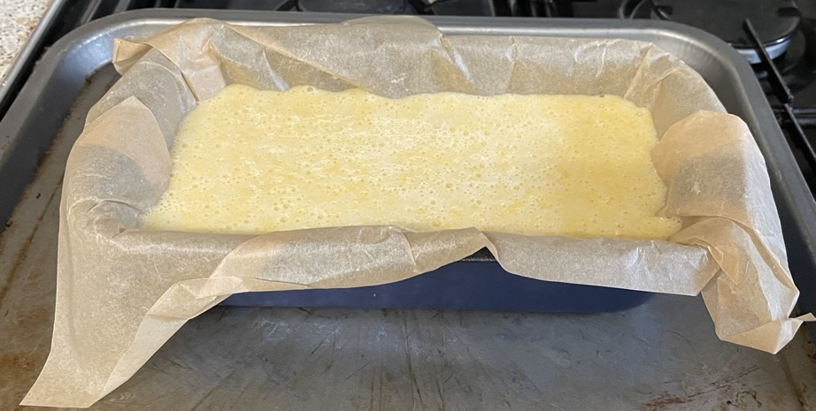
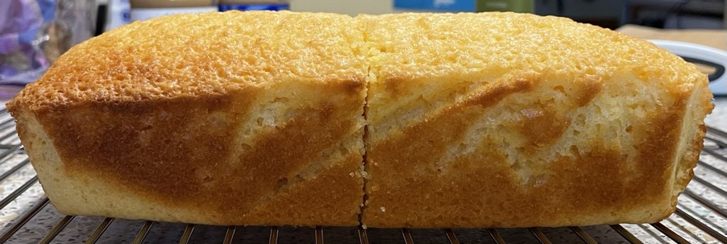
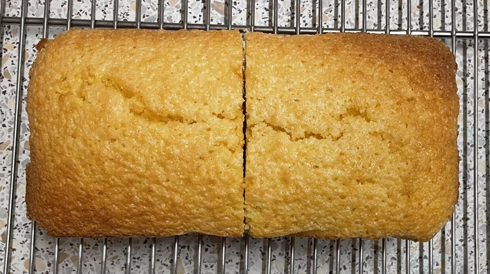
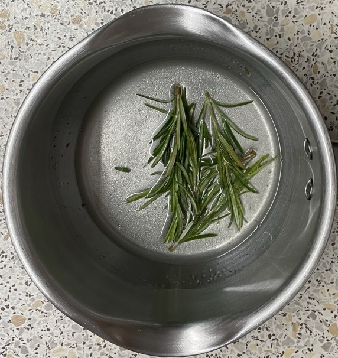

Lemon polenta cake
Cake
- Sift into bowl
- 175g polenta
- 50g plain flour
- 1½ tsp baking powder
- ¼ tsp salt
- Mix in cup
- 5 tbsp (71g) sunflower oil / vegetable oil
- 5 tbsp (85g) natural yogurt
- 2 tbsp lemon juice
- zest of 2 lemons
- Beat in separate bowl until creamy
- 2 eggs
- 2 egg whites
- 200g caster sugar
- Beat yogurt mixture into egg mixture until smooth
- Fold in polenta mixture
- Pour into 1.2l loaf tin, oiled and lined with baking paper
- Bake at 160°C for 40-45 mins until skewer comes out clean
- Cool cake on wire rack for 15 mins
- Slice in half then quarters then twelths
Syrup
- Bring to boil and simmer for 10 mins
- 30g caster sugar
- 30ml water
- 4 sprigs rosemary lightly bashed
Serving
- Make holes in the cooled cake with a skewer then pour over syrup through a strainer
- Calories = 2500 cake + 120 syrup, 1/12 = 220
Pics



